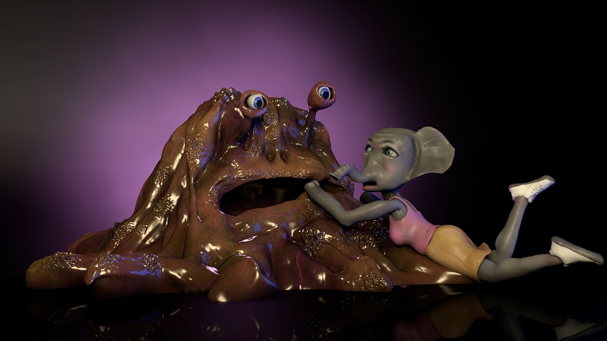

More Info - yours mine & ours, NYC
jeremycouillard@gmail.com
Upcoming and past shows and screenings
2018
The Founders of Daytona Beach Also Founded Dayton Ohio - VR installation at Zabludowicz Collection. London, UK
-Download a beta release of the game HERE
You Can Have Any Color Your Want As Long As It's The Sky Godess Nwt - Video commissioned for The Big Screen:Cobo Center Marquee Screen Series. Detroit, MI
Three Different Backdrops for Different Scenarios - Video commissioned for Digital Objects to be editioned using an ERC-721 token. Online
2017
Uncle Sad Bedroom - solo booth and video game release with yours mine & ours gallery at the Sunday Art Fair - London, UK
-Download a beta release of the game HERE
Suite for Absynth in D minus USB 1008 - A video comission by Daata Editions
-Screening release at Ludlow House, NYC on Monday September 18th, 6.30-8.30pm
Solo spotlight at Supernova, the Denver outdoor festival of digital animation and art.
ALIEN AFTERLIFE, solo show at yours mine & ours gallery Feb 17th - April 2nd. Download a beta of the video game here
-Download press release HERE
-Reviews in: ARTFORUM, Vice Creators, The New Yorker
First Look: Artists' VR, conversation and video release presented by New Museum and Rhizome. January 12th at 7pm
-Review in Artsy and The Creator's Project and in The New York Times
2016
Fugue of Play: An Exhibition on Art and Video Games, Curated by Alle Jung. Academie Minerva, Groningen Netherlands. November 24 - December 8
Optics 0:0 Parallax View Roulette, Brooklyn, NY. Wednesday, November 2, 2016, 8pm
-Review in The Creators Project
Ghost in the Machine Group show at Work Release in Norfolk, VA October 14th-November 19th
Sculpting (Virtual) Realities Curated by Ursula Ströbele at Trafo, Szczecin, Poland
-Review (in Polish) in magazyn.o.pl
Alien Puke Consciousness, A video game performance and live foley score with Ben Hall. At the Lincoln Center David Rubenstein Atrium on Thursday, June 9th at 7:30
Saturate, A contemporary animation exhibition curated by Dan Rule. At UNO St Claude Gallery in New Orleans from Feb 13 till March 6th
TOTEM 1.0, solo booth at ALAC fair in Los Angeles with Louis B James January 28th-31st At Barker Hangar in Santa Monica
-Interview about some of the components in the piece
MonkeyTown6, Austin, TX
Pain Tero Flight, (Collaboration with Jordan Rathus) Upfor Gallery, Portland, OR (January 20-February 27)
2015
Somewhere on Mars It's Daytime and Wind is Blowing Dust Down from a Mountain and Into a Valley, Edition Hotel Bungalow 262, 2901 Collins Av, Miami Beach, FL
-Review in Creator's Project
BELIEVES IN REINCARNATION, HATES HUGS, Youngworld, Detroit, MI (Opening July 25th)
-Review in Hyperallergic
Hot Slice at Zolla/Lieberman, Chicago, Il
Strobe Network at Flux Factory, Queens, NY
Piranha + Psychedlic Death Vomit + The Art Handlers, BAM, Brooklyn, NY
OUT OF BODY EXPERIENCE CLINIC, Solo show at Louis B James, NYC
- Reviews in: Art in America, Creator’s Project, Blouin Art Info
- Mentioned in Frieze issue 177, March 2016, in the article The Last Platform by Alexander Provan
- Mentioned in Artillery Mag, May 2016, in the article Deep Dreams by Josh Herman
Unfixed: New Painting, Arizona State University, Art Museum, Phoenix (February 7 – May 30, 2015)
Dallas Medianale, The Lost Worlds, Curated by Michael A. Morris, Dallas, TX (February 13th)
Rotterdam Film Festival, Rotterdam, Netherlands (January 24th and 25th)
2014
Cipher: Refraction, Video screening at CultureHub, New York, NY (October 17th, 7-10PM)
Friday Flash No. 8: 2014 Artwork Commissions, Denver, CO
Where Big Commercial Summer Group Show, Where Gallery, Brooklyn, NY
THE VISCOUS VALLEY, Zhulong Gallery, Dallas, TX (solo show, July 12 - August 16)
-Review in the Dallas Observer by Lauren Smart
4 Proposals for a Pavilion at the Historical Society of Atmos Village, Brooklyn Museum Artists Ball, Brooklyn, NY
Correspondence, Publication Studio Hudson, Catskill, NY
Where 4, Where, Brooklyn, NY
The Art Handlers, Salon94 Bowery Video Wall, New York, NY (February 1-14th)
MonkeyTown4 Denver, CO
2013
Ghosting Volume #5, curated by Johnny Woods, Los Angeles, CA
Aqua Video Lounge, curated by Montgomery Knott, Miami, FL
Video Vaudeville Presents Daily screenings in Miami with M23 Project space, Miami, FL
Windows, Denny Gallery, New York, NY
Back to the Reality, Projekt 722, Brooklyn, NY
Ora Serrata: The Boundary Between the Retina and the Ciliary Body New York, NY
Diff'rent Strokes, Louis B. James, New York, NY
Dreams Less Sweet (part of video compilation with Pyschic TV and Genesis P-Orridge), Warhol Museum, Pittsburgh, PA
MY TIME IN THE CULT OF MELTING ANCESTORS, Louis B. James, New York, NY (solo exhibition)
Monkey Town 3, Eyebeam, New York, NY
Kairos, Curated by Ken Farmer at Red Bull Music Academy New York, NY
Oh Internetz, Run Computer Run at Rua Red, Dublin, Ireland
Game Show, curated by Dustin London, Minus Space, Miami, FL
2012
3d Burns, FeGALLERY, Pittsburgh, PA
Facture, AIRPLANE, Brooklyn, NY
Gradients: Inside the Internet Rainbow, curated by Dora Moutot Casablanca, Morocco
Everything is Index, Nothing is History (Screening), The Invisible Dog, Brooklyn, NY
Columbia MFA Thesis Exhibition, Fisher Landau Center, Long Island City, NY
2011
Tigers in Red Weather, The LeRoy Neiman Gallery at Columbia University, NY
2010
I Heart Art, the WORK Gallery, Brooklyn, NY
Signature Power: Legends and Other Myths, Micro Museum, Brooklyn, NY
2009
Landscapes and Interiors, Bright Rain Gallery, Albuquerque, NM (Solo Show)
Hidden Pictures: Voyeurism in America, Micro Museum, Brooklyn, NY
Broad Ave Art Walk, MetalWorks Gallery, Memphis, TN
2008
Little Guy, Bright Rain Gallery, Albuquerque, NM (Solo show)
Robots/Labor/Future World Scene, Metrospace, Lansing, MI
Teaching
2014 - present Associate Professor and Program Director of New Media at LaGuardia Community College (CUNY), Queens, New York
Education
2012 MFA Columbia University, School of the Arts, New York
2004 BA Michigan State University, East Lansing, MI
Jeremy Couillard, (b. 1980, Livonia, MI) lives and works in New York City. He graduated in 2012 from Columbia University with an MFA in painting. Couillard has exhibited internationally including The Rotterdam Film Festival, Rotterdam, Netherlands; Trafo, Szczecin, Poland; the David Rubenstein Atrium at Lincoln Center with Ben Hall, New York, NY; Art Los Angeles Contemporary, Los Angeles, CA (solo); Zhulong Gallery, Dallas, TX (solo) and Louis B. James, New York, NY (solo). He recently completed a virtual reality video presented by the New Museum and Rhizome and an installation built around his video game Alien Afterlife at yours mine & ours gallery in New York, NY. Couillard’s work has been written about in VICE, Hyperallergic, The New York Times, Blouin Art Info, Art in America and more. He was also recently awarded a 2017 NYSCA/NYFA Artist Fellowship in Digital Media. Couillard has been Assistant Professor of New Media at LaGuardia Community College in Queens, New York since 2014.
 All work is licensed under a Creative Commons Attribution 3.0 Unported License.
All work is licensed under a Creative Commons Attribution 3.0 Unported License.